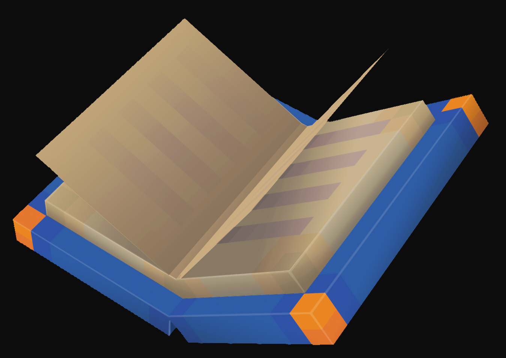

About me

I’m 2Pyrox, a dedicated level designer and Minecraft builder with over 3-4 years of experience specializing in unique terrain construction and creating immersive landscapes and structures. I’ve completed numerous commissioned projects and collaborated with various teams and well-known YouTubers, adapting to diverse concepts while maintaining high-quality standards.
My expertise lies in leveraging powerful building tools like Axiom, WorldEdit, Voxel Sniper, and Archeon to efficiently shape intricate terrains and craft complex structures with precision and attention to detail. These tools enable me to transform creative visions into reality, whether it’s designing vast, natural landscapes or constructing detailed architectural builds. Additionally, I am skilled in working with custom blocks, allowing me to add unique elements and creative touches that elevate the overall aesthetic and functionality of my builds.
This combination of technical proficiency, creative vision, and adaptability ensures that every project I undertake meets the highest standards of quality and originality. My ability to seamlessly integrate complex designs with practical functionality sets me apart as a versatile builder capable of bringing ambitious ideas to life. I am passionate about pushing the limits of what’s possible and continuously improving my skills to keep up with evolving trends in the building community.